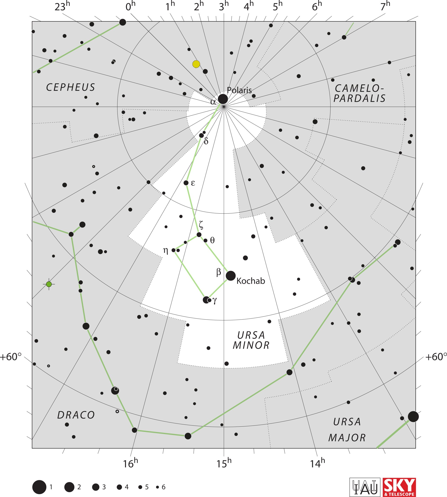

<div data-role="page" id="ursaMinor" data-theme="a">

	<div data-role="header">
		<a href="#home" data-icon="back" data-rel="back">Back</a>
		<h1>Ursa Minor</h1>
		<a href="#home" data-icon="home">Home</a>
	</div>

	<div data-role="content">

		<div class="cssImageMap">

			

			<a href="cepheus.html" class="constellation" data-side="left"
				data-x="180" data-y="360" data-width="300" data-height="70"></a>

			<a href="draco.html" class="constellation" data-side="left"
				data-x="240" data-y="1850" data-width="200" data-height="70"></a>

			<a href="camelopardalis.html" class="constellation" data-side="right"
				data-x="1480" data-y="350" data-width="300" data-height="140"></a>

			<a href="ursaMajor.html" class="constellation" data-side="right"
				data-x="1470" data-y="1890" data-width="230" data-height="140"></a>

		</div>

		<div id="here">
			<h2>Ursa Minor</h2>

			<p>Image Credit: IAU and Sky & Telescope magazine (Roger Sinnott
				& Rick Fienberg)
		</div>
	</div>
</div>
